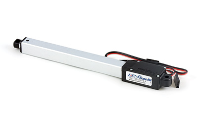
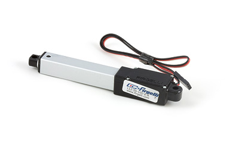
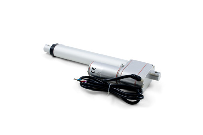
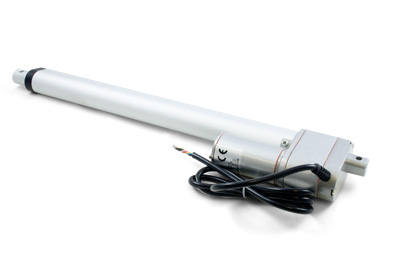
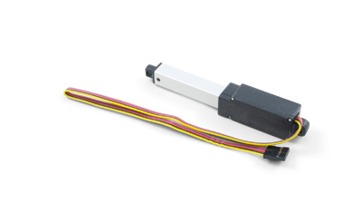

RC Linear Actuator L12-100-100-06-R

Product Features
This servo actuator has a stroke length of 100mm with a peak force of 23N and a peak speed of 12 mm/s.
Product Description
The L12 Linear Actuator is an axial design with a powerful drivetrain and a rectangular cross section for increased rigidity.
The L12 actuator is designed to move push or pull loads along its full stroke length. The speed of travel is determined by the gearing of the actuator and the load or force the actuator is working against at a given point in time. When power is removed, the actuator stops moving and holds its position, unless the applied load exceeds the backdrive force, in which case the actuator will backdrive. Stalling the actuator under power for short periods of time (several seconds) will not damage the actuator.
The linear actuator is an alternative to designing with gears, motors, servos and linkages. The controller sees the actuator as a standard RC servo.
RC Linear Actuator L12-50-100-06-R

Product Features
This servo actuator has a stroke length of 50mm with a peak force of 23N and a peak speed of 12 mm/s.
Product Description
The L12 Linear Actuator is an axial design with a powerful drivetrain and a rectangular cross section for increased rigidity.
The L12 actuator is designed to move push or pull loads along its full stroke length. The speed of travel is determined by the gearing of the actuator and the load or force the actuator is working against at a given point in time. When power is removed, the actuator stops moving and holds its position, unless the applied load exceeds the backdrive force, in which case the actuator will backdrive. Stalling the actuator under power for short periods of time (several seconds) will not damage the actuator.
The linear actuator is an alternative to designing with gears, motors, servos and linkages. The controller sees the actuator as a standard RD servo.
DC Linear Actuator P5H-24-150mm

Product Features
This heavy duty DC actuator has a stroke length of 150mm with a peak force of 350N and a peak speed of 24 mm/s.
Product Description
The series of linear actuators are high-torque DC motors geared to push or pull a load along the stroke of the actuator. This actuator comes with a built-in potentiometer, allowing your application to monitor the actuator's position.
This linear actuator has a stroke length of 150mm, can move at a rate of 24 mm/s and can extert up to 350N of force at lower speeds.
DC Linear Actuator P5H-24-300mm

Product Features
This heavy duty DC actuator has a stroke length of 300mm with a peak force of 350N and a peak speed of 24 mm/s.
Product Description
This series of linear actuators are high-torque DC motors geared to push or pull a load along the stroke of the actuator. This actuator comes with a built-in potentiometer, allowing your application to monitor the actuator's position.
This linear actuator has a stroke length of 300mm, can move at a rate of 24 mm/s and can extert up to 350N of force at lower speeds.
DC Linear Actuator L16-50-35-12-P

Product Features
This DC actuator has a stroke length of 50mm with a peak force of 50N and a peak speed of 32 mm/s.
Product Description
This series of linear actuators are compact DC motors geared to push or pull loads along the stroke of the actuator. This actuator comes with a built-in potentiometer, allowing your application to monitor the actuator's position.
This linear actuator has a stroke length of 50mm and a 35:1 gearbox. It is able to move at a rate of 32 mm/s and can exert up to 50N of force at lower speeds.
DC Linear Actuator L16-100-35-12-P
Product Features
This DC actuator has a stroke length of 100mm with a peak force of 50N and a peak speed of 32 mm/s.
Product Description
This series of linear actuators are compact DC motors geared to push or pull loads along the stroke of the actuator. This actuator comes with a built-in potentiometer, allowing your application to monitor the actuator's position.
This linear actuator has a stroke length of 100mm and a 35:1 gearbox. It is able to move at a rate of 32 mm/s and can exert up to 50N of force at lower speeds.
DC Linear Actuator L16-140-35-12-P
Product Features
This DC actuator has a stroke length of 140mm with a peak force of 50N and a peak speed of 32 mm/s.
Product Description
This series of linear actuators are compact DC motors geared to push or pull loads along the stroke of the actuator. This actuator comes with a built-in potentiometer, allowing your application to monitor the actuator's position.
This linear actuator has a stroke length of 140mm and a 35:1 gearbox. It is able to move at a rate of 32 mm/s and can exert up to 50N of force at lower speeds.
DC Linear Actuator L16-50-63-12-P
Product Features
This DC actuator has a stroke length of 50mm with a peak force of 50N and a peak speed of 32 mm/s.
Product Description
This series of linear actuators are compact DC motors geared to push or pull loads along the stroke of the actuator. This actuator comes with a built-in potentiometer, allowing your application to monitor the actuator's position.
This linear actuator has a stroke length of 50mm and a 63:1 gearbox. It is able to move at a rate of 32 mm/s and can exert up to 50N of force at lower speeds.
DC Linear Actuator L16-100-63-12-P
Product Features
This DC actuator has a stroke length of 100mm with a peak force of 50N and a peak speed of 32 mm/s.
Product Description
This series of linear actuators are compact DC motors geared to push or pull loads along the stroke of the actuator. This actuator comes with a built-in potentiometer, allowing your application to monitor the actuator's position.
This linear actuator has a stroke length of 100mm and a 63:1 gearbox. It is able to move at a rate of 32 mm/s and can exert up to 50N of force at lower speeds.
DC Linear Actuator L16-140-63-12-P
Product Features
This DC actuator has a stroke length of 140mm with a peak force of 50N and a peak speed of 32 mm/s.
Product Description
This series of linear actuators are compact DC motors geared to push or pull loads along the stroke of the actuator. This actuator comes with a built-in potentiometer, allowing your application to monitor the actuator's position.
This linear actuator has a stroke length of 140mm and a 63:1 gearbox. It is able to move at a rate of 32 mm/s and can exert up to 50N of force at lower speeds.
DC Linear Actuator L16-140-150-12-P
Product Features
This DC actuator has a stroke length of 140mm with a peak force of 175N and a peak speed of 8 mm/s.
Product Description
This L16 series of linear actuators are compact DC motors geared to push or pull loads along the stroke of the actuator. This actuator comes with a built-in potentiometer, allowing your application to monitor the actuator's position.
This linear actuator has a stroke length of 140mm and a 150:1 gearbox. It is able to move at a rate of 8 mm/s and can exert up to 175N of force at lower speeds.
We Provide:
- To be accessible, friendly, and helpful at all times.
- To answer the phone when you call, 24/7/365.
- Reply to your emails and support tickets within 24 hours.
- To provide timely information about new hardware.
- To provide all design documentations.
Please fulfill following request form to get more information!